| 日付 | 2012年7月28日（土） - 2012年7月29日（日） | ||||
|---|---|---|---|---|---|
| 山域 | 草津周辺 | ||||
| メンバー | 家族（妻、長女・1歳） | ||||
| 山行形態 | 子連れ1泊2日テント泊 | ||||
| アクセス | 車 | ||||
| ルート (Map2) |
|
2日目
5時に起床。昨晩、子供は少しぐずついていたが、とりあえず睡眠がとれて一安心。
テントを撤収して駐車場に向かう。
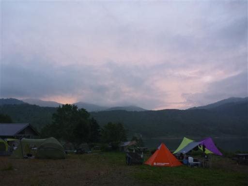
駐車場に到着。標高1515m。
まだ朝早いので車はほとんど停まっていない。
心配した天気だが、まあまあ晴れている。
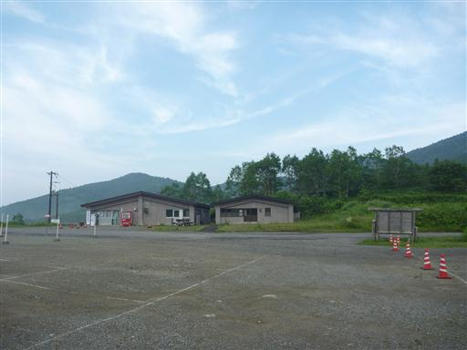
登山道に入ってすぐに沢を渡る。
傾いている木橋は濡れて滑りやすくなっているので非常に危険だ。
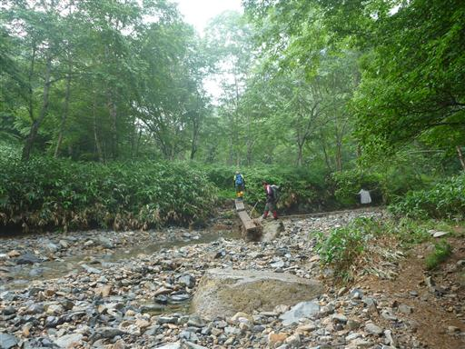
樹林帯の中を登っていく。
登り始めの標高が高いため展望が良い道が続くのかと思っていたが、案外樹林帯の中の道が長い。
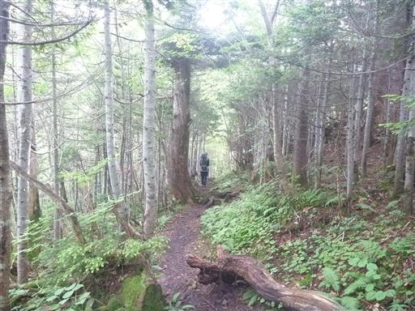
展望が少し開けたところで、眼下に野反湖がわずかに見える。
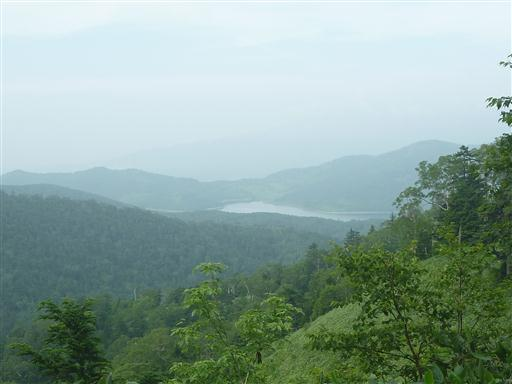
堂岩山山頂に到着する。山頂というより通過点という感じだ。
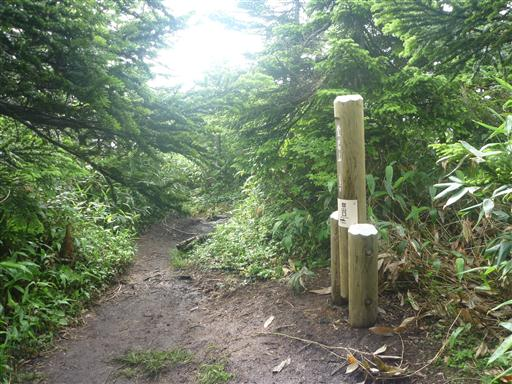
堂岩山を過ぎるとようやく展望が大きく広がる。
目指す白砂山が思った以上に遠くに見えている。
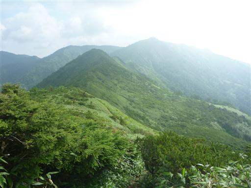
ハイマツや笹で覆われた斜面が緑色に輝き非常に美しい。
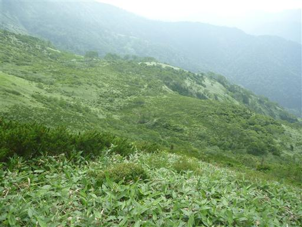
道端に大きな水たまりができている。
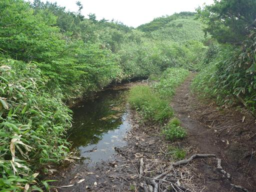
左手に八十三山が見えている。ずいぶん風変わりな山名だ。
登山道の無い山だが急峻な崖をもつなかなか立派な山だ。
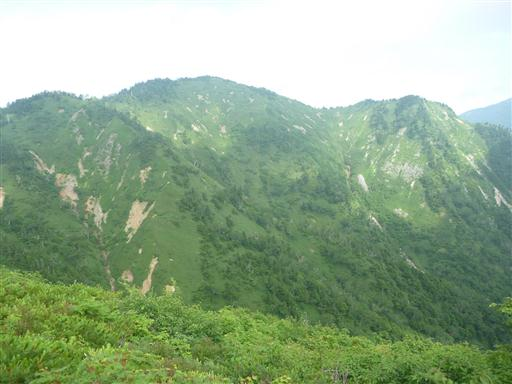
奥の方に見えているのは佐武流山。
この山も以前は登山道がなかったが、10年ほど前に道が造られた。
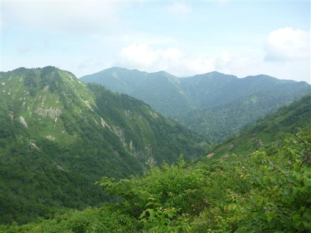
猟師の頭に到着。堂岩山と白砂山の間にある小ピークだ。
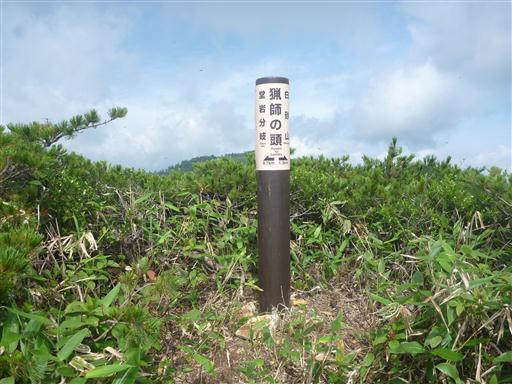
ここまで来ると白砂山まではあとわずかだ。

辺りは様々な高山植物が咲いている。
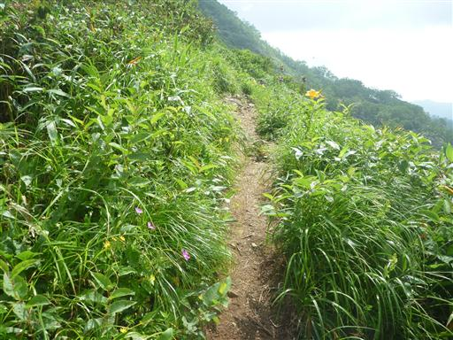
ニッコウキスゲ。あちらこちらで見られる。
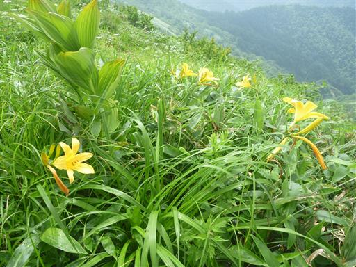
歩いてきた稜線を振り返る。
長い距離を歩いて来たので白砂山への最後の登りがつらい。
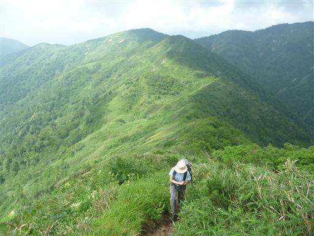
最後の坂を登り切って白砂山山頂に到着する。標高2140m。
山頂は思ったよりも狭い。一角に腰を下ろして昼食をとることにする。
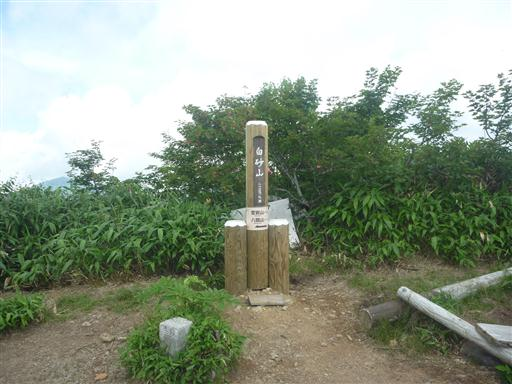
白砂山の先に続く稜線。
ここから先は登山道がないが、山頂からわずかな踏み跡が続いている。
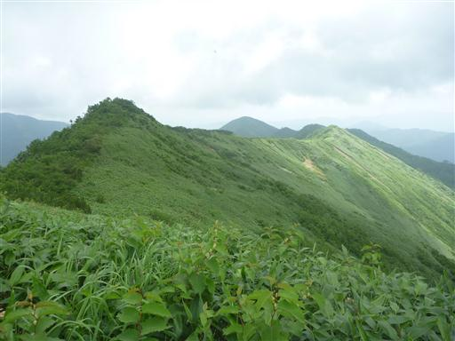
360度の展望が広がるはずの山頂だが、雲が出てきたため遠くの景色は望むことができない。
群馬・長野・新潟の3県境に位置するこの山からは、素晴らしい山岳展望が開けるはずなのだが残念だ。
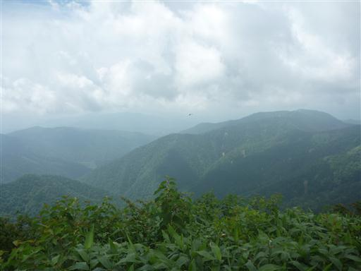
下山は来た道を戻る。
八間山を経由して下山するルートも考えていたが、天気が怪しくなってきたため
あきらめて無難な道を選択。
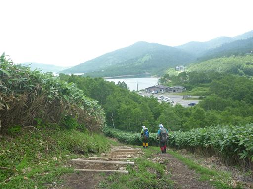
白砂山登山口に到着する。
長い間登りたいと思っていた山だけに、もう少し天気の良い日に登りたかったが、
ある程度は展望を望むことができ、雷雨にも会わなかったため、まあ良しとする。
家族で初めてのテント泊もできて、思い出深い山行となった。
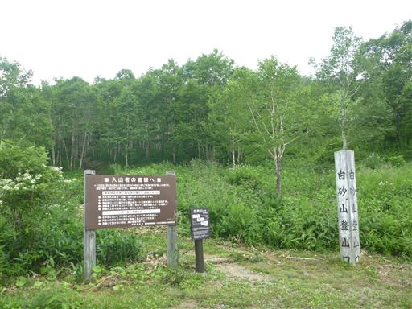